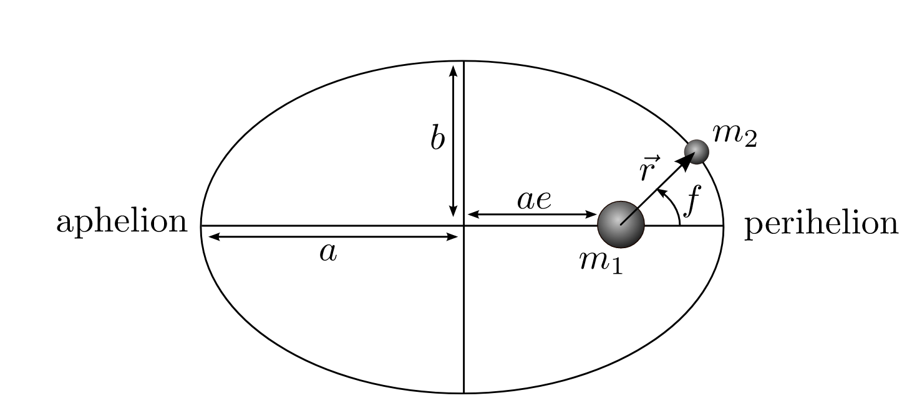

Forrige side🙂 🙁Ellipser

I tillegg til halvaksene bør du kjenne til begrepet brennpunkt. Denne er markert med massen m1 på figuren. En ellipse har to brennpunkter, begge ligger i en avstand ae fra sentrum langs store halvakse. Størrelsen e kaller vi eksentrisiteten og sier noe om hvor avlang ellipsen er. Neste side